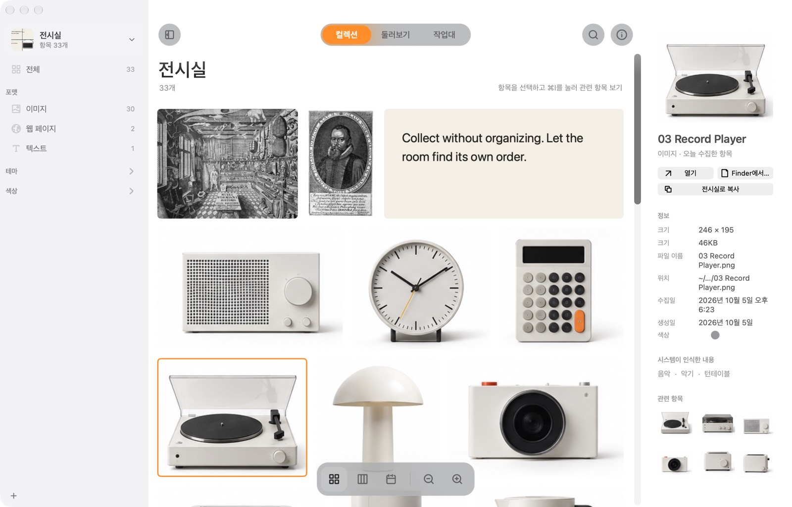
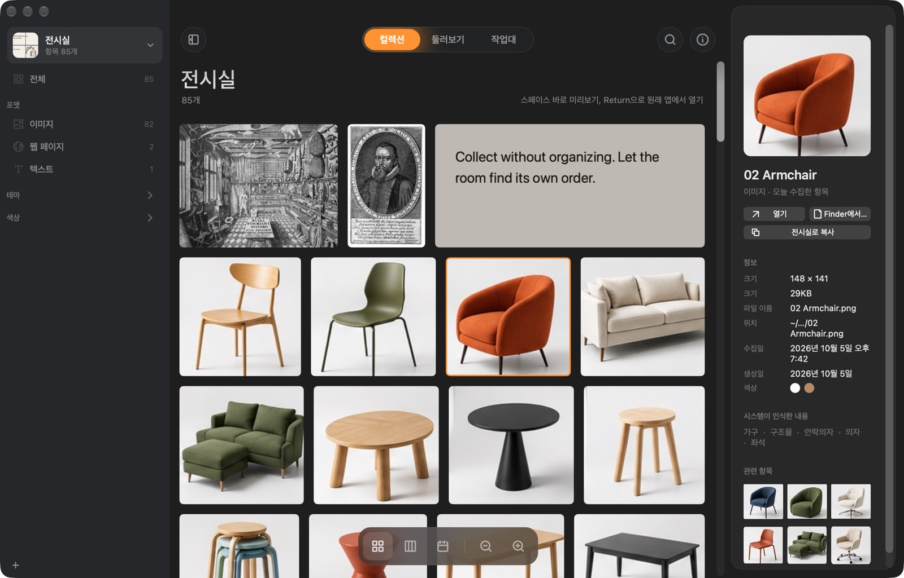
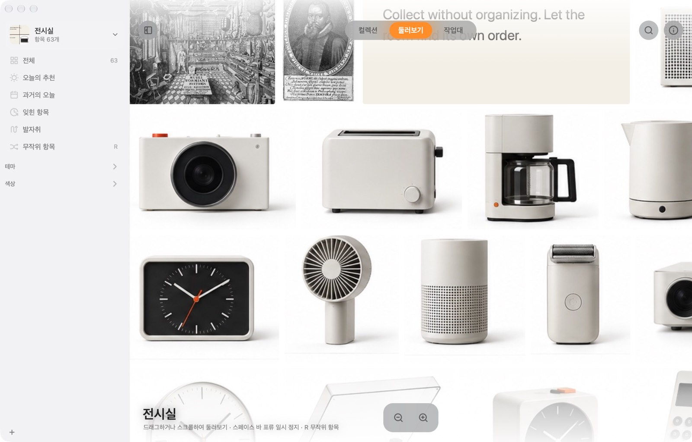
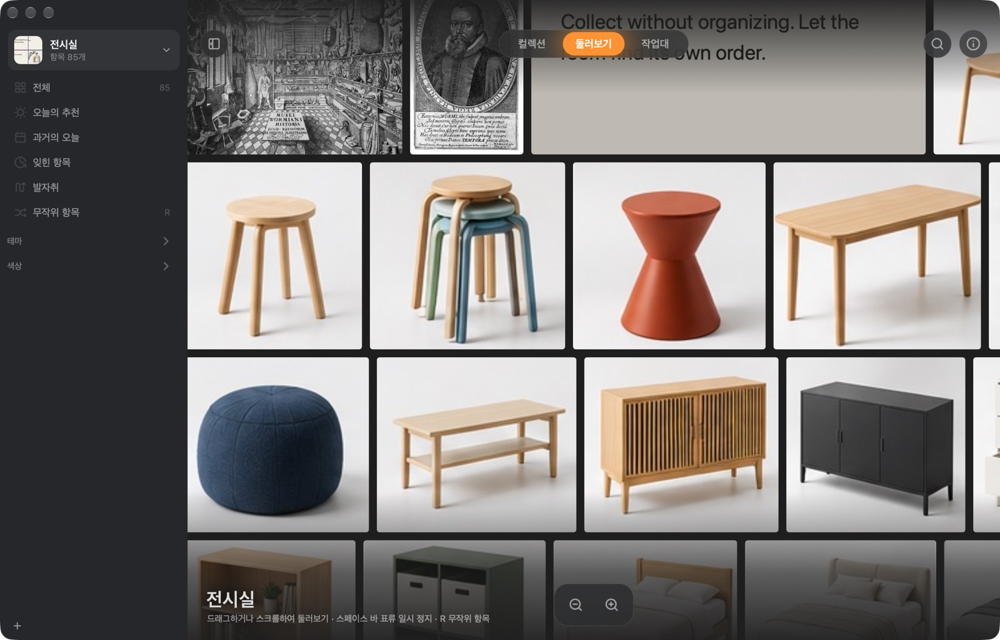
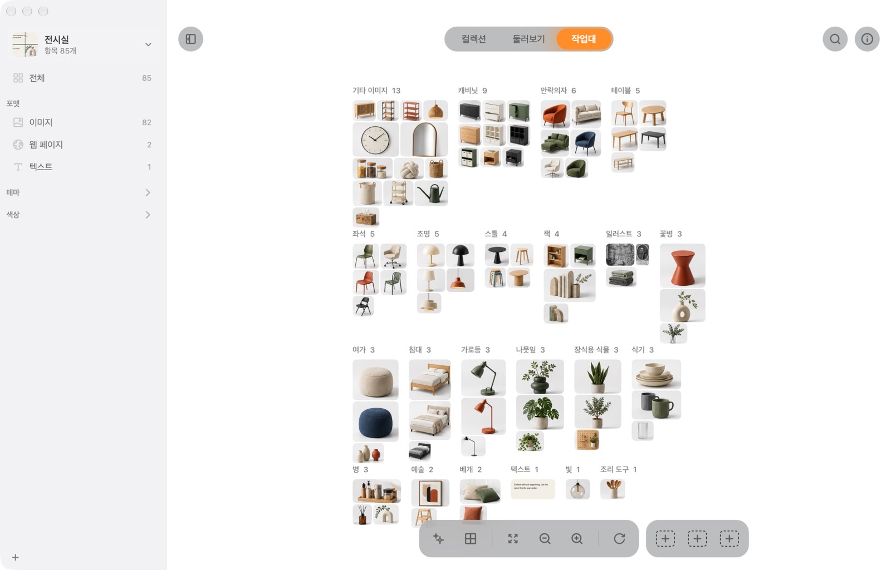
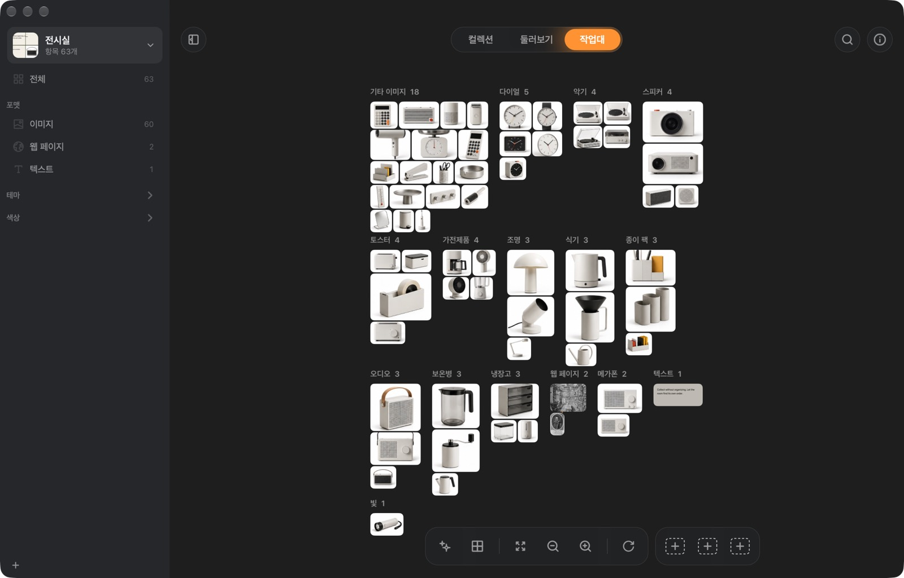

모든 것을 한눈에.
격자, 벽돌형, 타임라인으로 둘러보세요. 사이드바에는 형식, 종류, 주제, 색상이 저절로 채워집니다.


1Wunder란
사진, 링크, 인용문, 스크린샷, 파일. ⌘⇧C를 누르면 들어옵니다. 폴더를 고를 필요도, 이름을 붙일 필요도 없어요.
Wunder는 모은 것을 살펴봅니다. 사진 속 글자, 무엇이 찍혔는지, 어떤 색인지. 그래서 정리한 적이 없어도 나중에 찾을 수 있습니다.
2무엇이 다른가요
폴더는 왜 간직했는지 알기도 전에 어디에 둘지부터 정하게 합니다. 그래서 물건은 어디에도 없거나, 여기저기 흩어지게 되죠.
Wunder는 형식, 종류, 주제, 색상별로 스스로 정리합니다. 오래된 것도 다시 꺼내 주니, 모은 것이 그냥 묻혀 있지 않아요.
3사용법
여기서 해 보세요: ⌘⇧C를 누르거나 위의 키를 클릭하세요.
4할 수 있는 것
넣을 수 있는 것
웹에서, 카메라에서, 디스크에서. 사진 속 글자도 검색됩니다.
JPEGPNGHEICWebPGIFTIFFRAWPSD포인터를 올리면 그 자리에서 재생됩니다.
MOVMP4M4V재생할 수 있는 파형으로 보여 줍니다.
MP3M4AWAVAIFFFLAC모든 페이지의 글자를 검색할 수 있습니다.
PDF어떤 링크든 됩니다. 페이지 전체 사본을 남겨 사이트가 사라져도 볼 수 있어요. 책, 영화, 음악, 상품, 장소도 알아봅니다.
URL복사한 글은 출처를 기억하는 카드가 됩니다.
TXTRTFHTML영역이나 윈도우를 고르면 바로 들어옵니다.
⌃⌘⇧C자체 미리보기를 유지하고, 원래 앱에서 열립니다.
KeynoteFigmaZIP…전시실
프로젝트, 상황, 기분에 따라 전시실을 나눠 보세요. 전시실마다 컬렉션, 표지, 폴더가 따로 있고 iCloud로 Mac 간에 동기화할 수 있습니다.


 현재
현재


 iCloud
iCloud


검색
격자, 벽돌형, 타임라인으로 둘러보세요. 사이드바에는 형식, 종류, 주제, 색상이 저절로 채워집니다.


저절로 흘러가는 벽. ‘오늘의 추천’은 잊고 있던 것을 매일 12점 골라 이유와 함께 보여 줍니다.


형식, 종류, 주제, 색상별로 묶고, 옮기고, 선으로 이어 보세요. 다시 돌아올 배치를 3개까지 저장할 수 있습니다.


눈길을 끈 것을 간직하세요.
| Wunder | Atlas | Eagle | |
|---|---|---|---|
| 가격 | 무료 | US$39 | US$29.95 |
| 폴더나 태그 없이 스스로 정리 | ✓ | – | 규칙 설정 필요 |
| 설명으로 사진 찾기 | ✓ | – | ✓ |
| 매일 오래된 것을 다시 꺼내 줌 | ✓ | – | – |
| 자유롭게 배치하는 캔버스 | ✓ | ✓ | – |
| 모든 것이 Mac에만 저장 | ✓ | ✓ | ✓ |
| Windows 버전 | – | – | ✓ |
각 앱 공식 웹사이트의 설명을 바탕으로 정리 (2026년 10월).
잃어버리고 싶지 않지만 정리하고 싶지도 않은 것들을 두는 Mac 속 공간입니다. 사진, 웹 페이지, 글, 파일을 받아 내용을 이해하고 다시 찾을 수 있게 도와줍니다.
Wunder는 아직 Apple의 공증을 받지 않아 처음에는 macOS가 막습니다. ‘시스템 설정 → 개인정보 보호 및 보안’을 열고 아래로 스크롤해 ‘그래도 열기’를 클릭하세요. 한 번만 하면 됩니다.
또는 터미널에서: xattr -dr com.apple.quarantine /Applications/Wunder.app
없습니다. 사진 속 글자 읽기, 찍힌 것 인식, 색상, 비슷한 사진, 질문 답변은 모두 Apple 프레임워크로 Mac에서 처리됩니다. Wunder가 인터넷에 연결하는 경우는 모은 페이지를 읽을 때, 설명 검색 모델(약 106MB, 한 번, 선택 사항)을 내려받을 때, 새 버전을 확인할 때뿐입니다.
아니요. 파일 위치를 기억하고, 옮겨도 따라갑니다. 사본을 두고 싶다면 전시실마다 전용 폴더에 모든 파일을 저장하게 할 수 있습니다.
전시실의 동기화를 켜면 iCloud Drive로 옮겨지고, 같은 Apple 계정의 Mac이면 어디서든 열 수 있습니다. 두 대에서 동시에 바꿔도 양쪽 변경이 모두 남습니다.
macOS 14 Sonoma 이상의 Mac. 컬렉션에 질문하려면 Apple Intelligence(macOS 26)가 필요합니다.
네. 소스는 GitHub에 있습니다.
Mac용 무료. 계정도, 설정도 필요 없습니다.
Mac용 다운로드